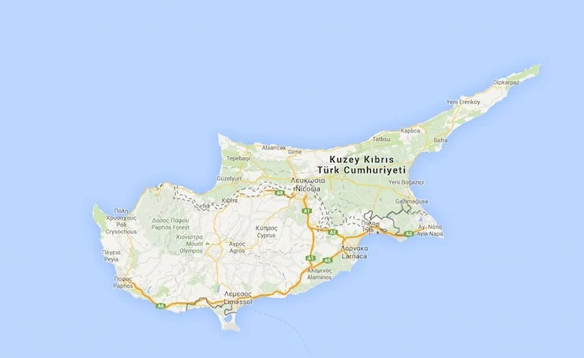

Genel Bilgiler
Kuzey Kıbrıs Türk Cumhuriyeti (KKTC), Kıbrıs Adası’nın kuzeyinde yer alan de facto bağımsız bir devlettir. Başkenti Lefkoşa’dır. Yaklaşık 330 bin nüfusa sahiptir. Resmî dili Türkçe’dir ve para birimi Türk Lirası (TRY)’dır. KKTC, yalnızca Türkiye tarafından tanınmakta olup, uluslararası alanda Kıbrıs Cumhuriyeti’nin bir parçası olarak kabul edilmektedir.
KKTC, kuzeyde Akdeniz, güneyde Kıbrıs Cumhuriyeti ile çevrilidir. Yüzölçümü yaklaşık 3.355 km²’dir. Ülke coğrafyası dağlık ve platolardan oluşur; önemli dağları Beşparmak Dağları’dır. Kıyı şeridi uzun ve turizm açısından değerlidir.
Başkent: Lefkoşa
Kıta: Orta Doğu ve Kuzey Afrika
Yüzölçümü: 3.355 km²
Nüfus (2025): 350.000
Bayrak Anlamı: KKTC bayrağı beyaz zemin üzerinde kırmızı bir ay ve yıldız ile iki kırmızı yatay şeritten oluşur. Kırmızı ay ve yıldız Türkiye ile olan kültürel ve tarihi bağı simgeler; beyaz barışı ve saflığı temsil eder. Bayrak 1984 yılında kabul edilmiştir.
Kuzey Kıbrıs Türk Cumhuriyeti Haritası
Ekonomi
KKTC ekonomisi hizmet sektörü ağırlıklıdır; turizm, eğitim ve inşaat sektörü önemli gelir kaynaklarıdır. Tarımda narenciye, zeytin ve nar öne çıkar. Sanayi sektörü sınırlıdır; gıda işleme ve hafif sanayi faaliyetleri bulunur. Türkiye’den ekonomik ve mali destek, KKTC ekonomisinin önemli bir parçasıdır.
| Yıl | İhracat (Milyar $) | İthalat (Milyar $) |
|---|---|---|
| 2019 | 0.2 | 1 |
| 2020 | 0.15 | 0.9 |
| 2021 | 0.25 | 1.1 |
| 2022 | 0.28 | 1.2 |
| 2023 | 0.3 | 1.3 |